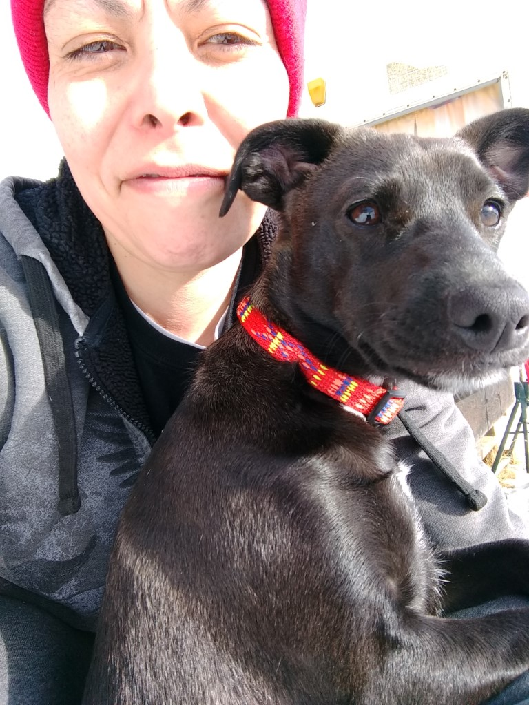
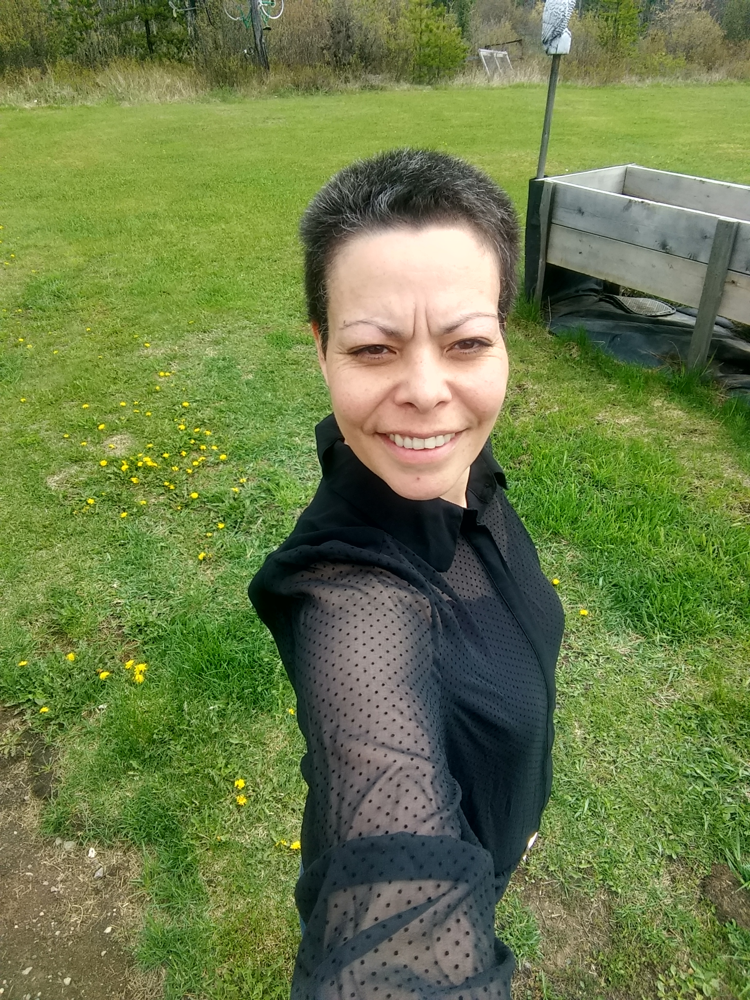

Hobbies and Interests
- Reading
- Hanging out with my dog
- Documentaries and information
My Experiences List
- Work Experience
- Life Experience
- Many skills gained through my work and life experiences
- Future Possibilities
- Who knows what the future holds for me
Some Things I Care About
- Friends and family
- My dog
- Love and Light to all
- Nature
- Proper rest and sleep
- Laughter
Images
Rain Noise Generator
 
This video created by Edge of Wonder